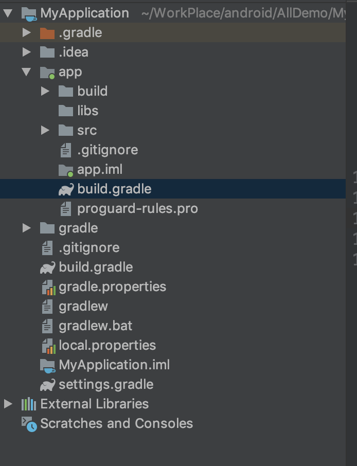

AS是采用gradle来进行构建项目，而gradle是基于groovy语言。这里了解一下项目中gradle的详细配置。

Project的build.gradle文件
1 | // Top-level build file where you can add configuration options common to all sub-projects/modules. |
buildscript{}闭包是gradle脚本执行所需要的依赖，分别是对应的maven库和插件repositories{}闭包：配置远程仓库,该闭包中声明了jcenter()和google()的配置，其中jcenter是一个代码托管仓库，上面托管了很多Android开源项目，在这里配置了jcenter后我们可以在项目中方便引用jcenter上的开源项目，从Android Studio3.0后新增了google()配置，可以引用google上的开源项目dependencies{}闭包：配置构建工具,该闭包使用classpath声明了一个Gradle插件，由于Gradle并不只是用来构建Android项目，因此此处引入相关插件来构建Android项目，其中’3.0.0’为该插件的版本号，可以根据最新的版本号来调整
allprojects{}闭包是项目本身需要的依赖，比如项目所需要的maven库task clean(type: Delete)是运行gradle clean时，执行此处定义的task任务，该任务继承自Delete，删除根目录中的build目录。其中buildscript包含repositories闭包和dependencies闭包
Module的build.gradle文件
1 | apply plugin: 'com.android.application' |
apply plugin
1 | // 声明是Android程序， |
apply plugin表示应用了一个插件，一般有两种值可选：
com.android.application，表示该模块为应用程序模块，可以直接运行，打包得到的是apk文件com.android.library，表示该模块为库模块，只能作为代码库依附与别的应用程序模块来运行，打包得到的是aar文件
android{}闭包
这个闭包主要为了配置项目构建的各种属性：
signingConfigs{}
1 | signingConfigs {// 自动化打包配置 |
可以手动添加签名配置，也可以通过Project Structure->app->Singing，点击下面+号填入配置信息即可生成代码配置。
签名配置完成后可以方便带签名打包，在module的Build Variants中有两个Type，分别是debug和release，可以选择任意一个类型进行打包，并且他们会利用各自配置的Key进行打包，执行 Run app或者Build->Build apk就会自动在module name/app/build/outputs/apk路径下生成Apk文件。另一种打包方式是Build->Generate Signed APK填写签名信息生成Apk。
compileSdkVersion
设置编译时用的Android版本
buildToolsVersion
设置编译时使用的构建工具的版本，Android Studio3.0后去除此项配置
defaultConfig{}
1 | defaultConfig { |
applicationId：指定了项目的包名。minSdkVersion:指定项目最低兼容的版本，如果设备小于这个版本或者大于maxSdkVersion(一般不用)将无法安装这个应用，这里指定为16，表示最低兼容到Android 4.1系统。targetSdkVersion:指定项目的目标版本，表示在该目标版本上已经做过充分测试，系统会为该应用启动一些对应该目标系统的最新功能特性，Android系统平台的行为变更，只有targetSdkVersion的属性值被设置为大于或等于该系统平台的API版本时，才会生效。例如，若指定targetSdkVersion值为22，则表示该程序最高只在Android5.1版本上做过充分测试，在Android6.0系统上（对应targetSdkVersion为23）拥有的新特性如系统运行时权限等功能就不会被启用。versionCode:表示版本号，一般每次打包上线时该值只能增加，打包后看不见。versionName:表示版本名称，展示在应用市场上。testInstrumentationRunner:"android.support.test.runner.AndroidJUnitRunner"表明要使用AndroidJUnitRunner进行单元测试。
buildTypes{}
这个闭包主要指定生成安装文件的主要配置，一般包含两个子闭包，一个是debug闭包，用于指定生成测试版安装文件的配置，可以忽略不写；另一个是release闭包，用于指定生成正式版安装文件的配置。两者能配置的参数相同，最大的区别默认属性配置不一样，两种模式支持的属性配置如下图：
1 | buildTypes {// 生产/测试环境配置 |
release{}闭包和debug{}闭包两者能配置的参数相同，最大的区别默认属性配置不一样：
minifyEnabled:表明是否对代码进行混淆，true表示对代码进行混淆，false表示对代码不进行混淆，默认的是false。proguardFiles:指定混淆的规则文件，这里指定了proguard-android.txt文件和proguard-rules.pro文件两个文件，proguard-android.txt文件为默认的混淆文件，里面定义了一些通用的混淆规则。proguard-rules.pro文件位于当前项目的根目录下，可以在该文件中定义一些项目特有的混淆规则。buildConfigField:用于解决Beta版本服务和Release版本服务地址不同或者一些Log打印需求控制的。 例如：配置buildConfigField(“boolean”, “LOG_DEBUG”, “true”)，这个方法接收三个非空的参数，第一个：确定值的类型，第二个：指定key的名字，第三个：传值，调用的时候BuildConfig.LOG_DEBUG即可调用。debuggable:表示是否支持断点调试，release默认为false，debug默认为true。jniDebuggable:表示是否可以调试NDK代码，使用lldb进行c和c++代码调试，release默认为false。signingConfig:设置签名信息，通过signingConfigs.release或者signingConfigs.debug，配置相应的签名，但是添加此配置前必须先添加signingConfigs闭包，添加相应的签名信息。renderscriptDebuggable:表示是否开启渲染脚本就是一些c写的渲染方法，默认为false。renderscriptOptimLevel:表示渲染等级，默认是3。pseudoLocalesEnabled:是否在APK中生成伪语言环境，帮助国际化的东西，一般使用的不多。applicationIdSuffix:和defaultConfig中配置是一的，这里是在applicationId 中添加了一个后缀，一般使用的不多。versionNameSuffix:表示添加版本名称的后缀，一般使用的不多。zipAlignEnabled:表示是否对APK包执行ZIP对齐优化，减小zip体积，增加运行效率，release和debug默认都为true。
sourceSets{}
配置目录指向
1 | sourceSets {//目录指向配置 |
配置 jniLibs.srcDirs = ['libs']，可以在Android studio的Android视图下生成jniLibs文件夹，可以方便我们存放jar包和库文件，其中Android视图下的jniLibs和project视图下的libs指向同一文件夹（app→libs），如下图所示：
更多事例：
1 | manifest.srcFile 'AndroidManifest.xml' |
packagingOptions{}
打包时的相关配置
当项目中依赖的第三方库越来越多时，有可能会出现两个依赖库中存在同一个（名称）文件。如果这样，Gradle在打包时就会提示错误（警告）。那么就可以根据提示，然后使用以下方法将重复的文件剔除，比较常用的是通过exclude去除重复的文件，例如：
1 | packagingOptions{ |
productFlavors{}
多渠道配置
这个配置是经常会使用到的，通常在适配多个渠道的时候，需要为特定的渠道做部分特殊的处理，比如设置不同的包名、应用名等。场景：当我们使用友盟统计时，通常需要设置一个渠道ID，那么我们就可以利用productFlavors来生成对应渠道信息的包，如：
1 | android { |
更简洁的方式：
1 | android { |
配置完之后，在命令行窗口中（Terminal）中输入gradlew assembleRelease（windows）即可开始打包，在Mac系统中对应指令是./gradlew assembleRelease。当然，如果想要debug版本的包，将指令中assembleRelease改为assembleDebug即可。最后生成的包还是在app/build/outputs/apk中，默认命名格式如app-wandoujia-release-unsigned.apk，在module的Build Variants中可以选择相应的渠道。
注：Android Studio3.0需在主app的build.gradle里面的
1 | defaultConfig { |
lintOptions{}
代码扫描分析
Lint 是Android Studio 提供的 代码扫描分析工具，它可以帮助我们发现代码结构/质量问题，同时提供一些解决方案，而且这个过程不需要我们手写测试用例。
Lint 发现的每个问题都有描述信息和等级（和测试发现 bug 很相似），我们可以很方便地定位问题，同时按照严重程度进行解决。
1 | //程序在编译的时候会检查lint，有任何错误提示会停止build，我们可以关闭这个开关 |
dependencies{}
该闭包定义了项目的依赖关系，一般项目都有三种依赖方式：本地依赖、库依赖和远程依赖。本地依赖可以对本地的jar包或目录添加依赖关系，库依赖可以对项目中的库模块添加依赖关系，远程依赖可以对jcener库上的开源项目添加依赖关系。从Android Studio3.0后compile引入库不在使用，而是通过api和implementation，api完全等同于以前的compile，用api引入的库整个项目都可以使用，用implementation引入的库只有对应的Module能使用，其他Module不能使用，由于之前的项目统一用compile依赖，导致的情况就是模块耦合性太高，不利于项目拆解，使用implementation之后虽然使用起来复杂了但是做到降低偶合兴提高安全性。
1 | dependencies { |
implementation fileTree(include: ['*.jar'], dir: 'libs')：implementation fileTree是一个本地依赖声明，表示将libs目录下所有.jar后缀的文件都添加到项目的构建路径当中。
testImplementation和androidTestImplementation：表示声明测试用例库。
完整配置
1 | // 声明是Android程序， |
签名
AS一键生成
1、AS菜单中Build->Generate Signed APK点击
2、点击Create New...
”Create new…”新建一个签名文件
”Choose existing…”选择一个已经存在的签名文件
3、填写完整的签名信息。
填写完毕点击OK
参数介绍
Key store path: 签名文件路径Password: 签名密码Confirm: 确认密码Alias: 别名Validity ( years ): 有限期 （年）First and Last Name: 全名Organizational Unit: 组织单位Organization: 组织City or Locality: 城市或地方State or Province: 州或省Country Code(XX): 国家代码
这里密码统一填写“android”，别名写个“key”即可。其他的信息根据实际情况和需求填写，并不很重要。
4、生成文件名后缀为keystore
选V1打包出来的app是jar的（一般这种就是当做第三方导入项目来用的），
选v2打包出来的APP是apk版本的（也就是可以直接在手机上安装的，可是上线的）；
一般情况下两个同时选择即可。然后点击Finish完成生成签名。
原因：
v2的用途解释：
1.用于验证其完整性的APK的加密签名现在位于ZIP中央目录之前。
2.这个签名是在整个APK文件的二进制内容上计算和验证的，而不是在v1的归档文件中解压缩文件内容。
3.一个APK可以同时由v1和v2签名同时签署，所以它仍然可以向后兼容以前的Android版本。
但是只设置v2会引起7.0以下会直接安装完显示未安装，7.0以上则使用了V2的方式验证
报错信息为：INSTALL_PARSE_FAILED_NO_CERTIFICATES。
同时设置V1和V2则所有机型都没问题。而只设置v1签名并不会影响什么，但是在7.0上不会使用更安全的验证方式
如果你想在使用Android分级插件时禁用添加v1或v2的签名，你可以将这些行添加到你的signingConfig部分。
v1SigningEnabled false
v2SigningEnabled false
命令行生成
配置jdk后
运行命令1
keytool -genkey -alias forever -keyalg RSA -validity 10000 -keystore forever.keystore
这里关键文字的代表意义：
- forever：keystore的别名alias
- 10000：keystore的有效天数
- forever.keystore：keystore的名称
1、第一次输入的秘钥库口令即为forever.keystore的密码
2、然后填写相关的信息
3、生成对应的forever.keystore，文件地址在cmd命令的对应路径下面
题外话
Project的setting.gradle文件
1 | include ':app' |
setting.gradle 文件在 初始化过程中被执行，构建器通过setting.gradle 文件中的内容了解哪些模块将被build。
注意：单模块项目不一定需要有 setting 文件，但一旦有多个模块，必须要有 setting 文件，同时也要写明所有要构建的模块，否则 gradle 不会 build 不包括的模块。